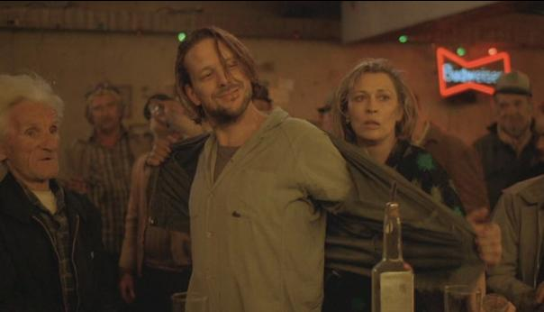
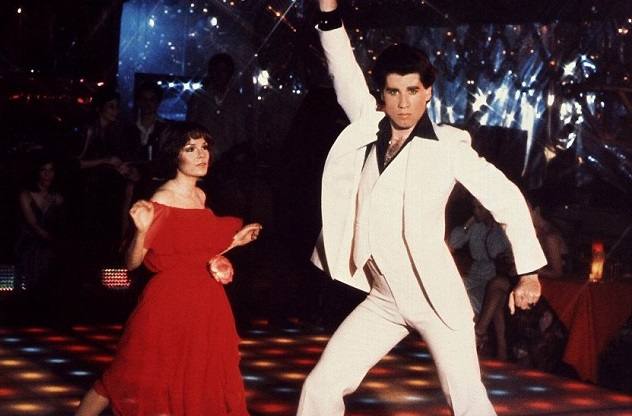

Как создать игру? Часть 1/3
На краудфандинговой платформе Kickstarter появилась кампания по сбору средств на производство очень своеобразного хэндмейда. Шведский дизайнер Лав Хультен соединил дерево с олдскульной электроникой, создав тем самым эстетичный ретро-геймпад. Как сообщается, винтажные чудо способно запускать игры консолей NES, Atari 2600 и Game Boy.
Читать далее30 ноября 2015 в 1:58

Как создать игру? Часть 2/3
На краудфандинговой платформе Kickstarter появилась кампания по сбору средств на производство очень своеобразного хэндмейда. Шведский дизайнер Лав Хультен соединил дерево с олдскульной электроникой, создав тем самым эстетичный ретро-геймпад. Как сообщается, винтажные чудо способно запускать игры консолей NES, Atari 2600 и Game Boy.
Читать далее30 ноября 2015 в 1:58
Как создать игру? Часть 3/3
На краудфандинговой платформе Kickstarter появилась кампания по сбору средств на производство очень своеобразного хэндмейда. Шведский дизайнер Лав Хультен соединил дерево с олдскульной электроникой, создав тем самым эстетичный ретро-геймпад. Как сообщается, винтажные чудо способно запускать игры консолей NES, Atari 2600 и Game Boy.
Читать далее30 ноября 2015 в 1:58